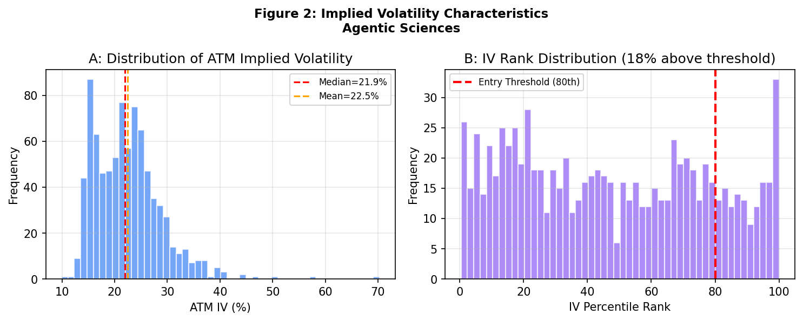
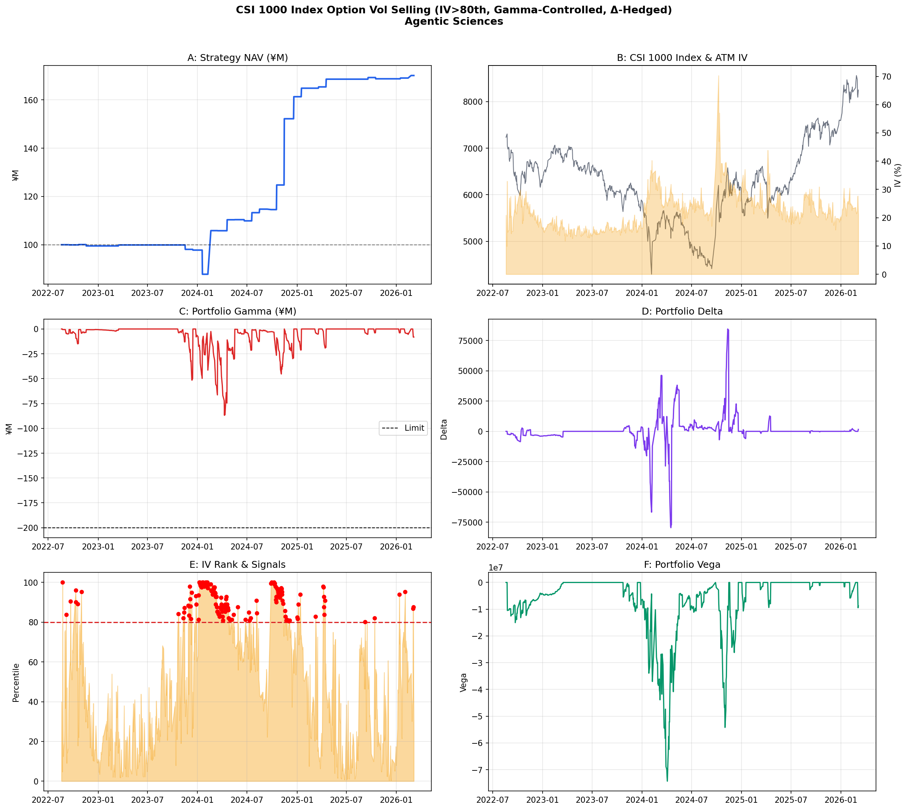
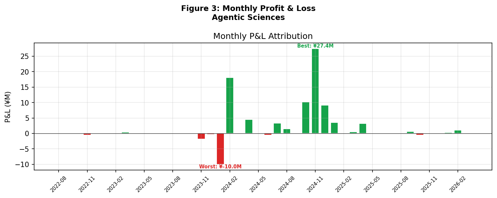
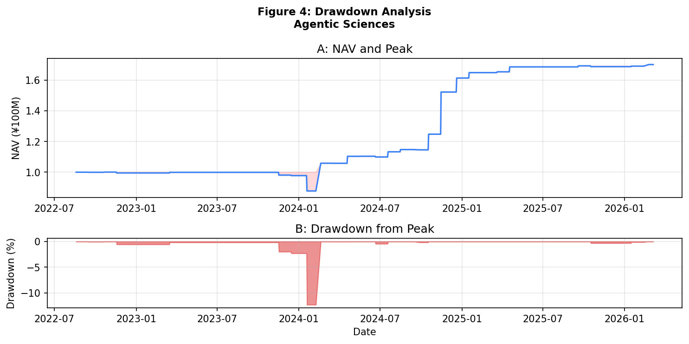
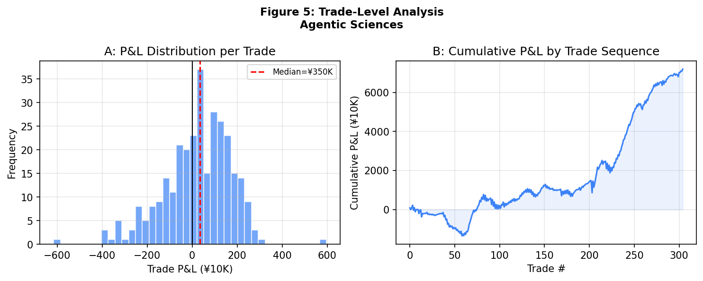
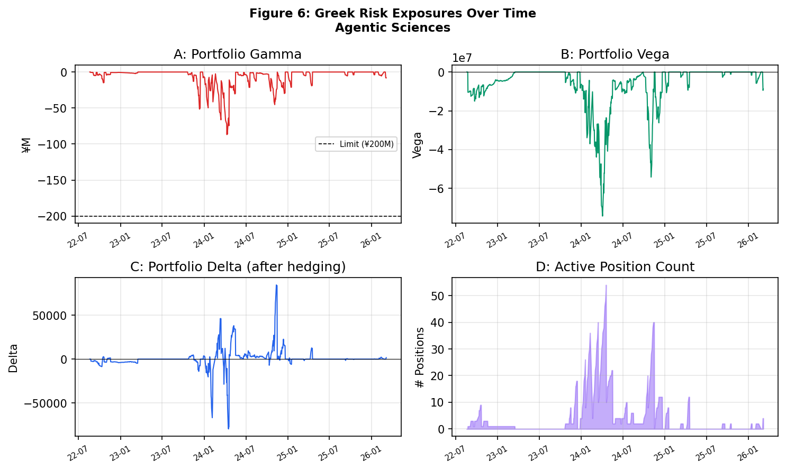

A delta-hedged, gamma-controlled short volatility strategy exploiting the variance risk premium in China's index options market.
The strategy sells near-month ATM straddles (calls + puts) on CSI 1000 index options when implied volatility is elevated, and delta-hedges with index futures. Two layers of gamma risk control prevent excessive short convexity exposure.
On each trading day, compute the ATM implied volatility percentile rank over a rolling 252-day window. Enter short straddle positions when IV rank exceeds the 80th percentile.
| Parameter | Value | Description |
|---|---|---|
| Per-Trade Gamma | ≤ ¥2M | Maximum notional gamma per individual option sale |
| Portfolio Gamma | ≤ ¥200M | Hard limit on aggregate notional gamma |
| Delta Hedge | Daily | Rebalanced using CSI 1000 index futures (IM) |
| Max Contracts | 50/side | Maximum contracts per call or put side |
| IV Threshold | 80th pctile | Rolling 1-year IV percentile rank |
| Greek | Formula | Interpretation (Short Position) |
|---|---|---|
| Delta (Δ) | ∂V/∂S | Hedged to ≈ 0 daily via futures |
| Gamma (Γ) | Γ × multiplier × S²/100 | Negative (short convexity) — capped at ¥200M |
| Vega (ν) | ∂V/∂σ | Negative — profits when IV falls |
| Theta (Θ) | ∂V/∂t | Positive — earns time decay daily |
| Metric | Value |
|---|---|
| Backtest Period | Aug 2022 – Mar 2026 |
| Initial Capital | ¥100,000,000 |
| Final NAV | ¥171,921,375 |
| Total Return | 71.9% |
| Annualized Return | 16.5% |
| Sharpe Ratio | 0.94 |
| Maximum Drawdown | -12.3% |
| Win Rate | 63.3% |
| Total Trades | 305 |
| Sell Days | 153 / 842 (18.2%) |
2022–2023: Low IV environment (mean 16%). Strategy mostly inactive — only 14 sell days. Minimal returns, confirming the filter correctly avoids low-VRP regimes.
2024: IV surged to mean 27.6% following the September volatility spike. Strategy sold on 115 days, generating the majority of cumulative returns. This validates the core thesis: sell volatility when it's expensive.
2025: Despite elevated absolute IV (24%), the rolling 1-year percentile rank dropped to 33.9 because the trailing window included extreme 2024 readings. Strategy correctly abstained until September 2025, when the extreme Sep-2024 data rolled out.






| Source | Data | Access |
|---|---|---|
| AKShare | CSI 1000 option chains (CFFEX) | Free, open-source Python API |
| Sina Finance | CSI 1000 index prices | Via AKShare backend |
| CFFEX | Contract specifications (MO series) | Public |
All data is publicly available. No proprietary data sources were used. Options data covers July 2022 – March 2026 (56,101 observations across 1,022 contract series).